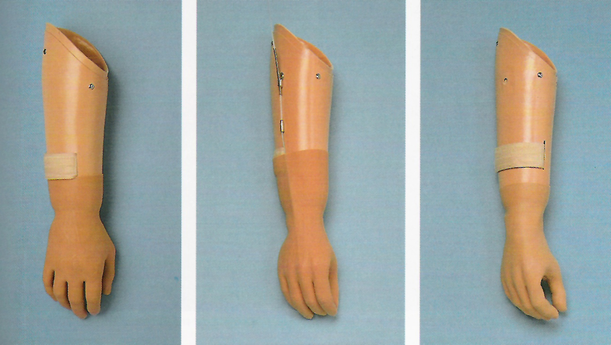
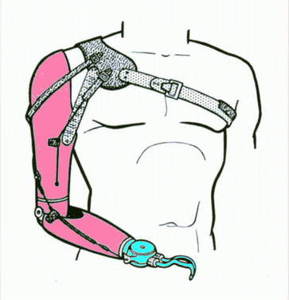
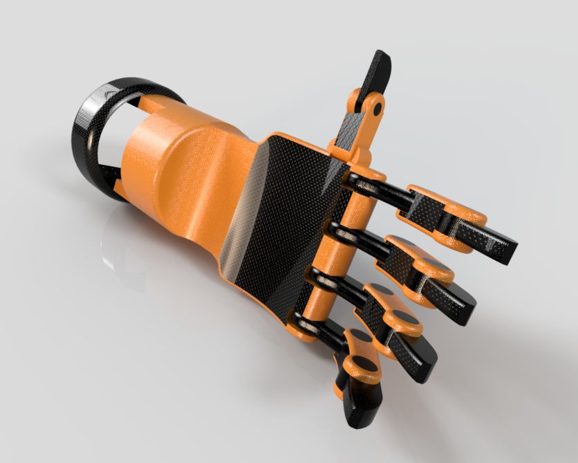
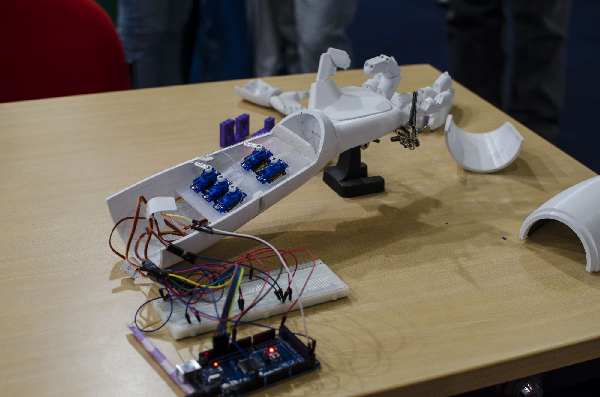
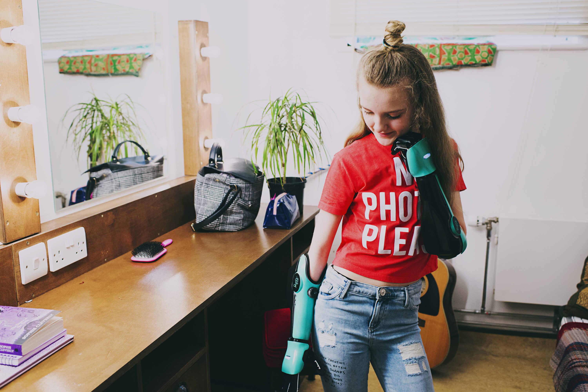

INTRODUCCIÓN
Según la organización mundial de la salud, discapacidad son las limitaciones de la actividad y las restricciones de la participación. Las deficiencias son problemas que afectan a una estructura o función corporal; las limitaciones de la actividad son dificultades para ejecutar acciones o tareas, y las restricciones de la participación son problemas para participar en situaciones vitales. Por consiguiente, la discapacidad es un fenómeno complejo que refleja una interacción entre las características del organismo humano y las características de la sociedad en la que vive. Las causas pueden ser factores congénitos, hereditarios,cromosómicos,por accidentes o enfermedades degenerativas,neuromusculares, infecciosas o metabólicas entre otras, las cuales afectan la vida.
ESTADO DEL ARTE
1. PREVALENCIA AMPUTACIÓN TRANSRADIAL
ESTUDIOS EN LATINOAMÉRICA
A. CHILE: Hospital Hernán Henríquez Aravena, Temuco. Durante 5 años de estudios se registró 892 cirugías de amputaciones. 143 fueron amputaciones de extremidades superiores que representa el 16.03%, de estos 122 fueron varones (85.31%). hubo 2 amputados de mano completa, 6 sufrieron amputaciones de brazo o antebrazo, el 75% fueron amputaciones de dedos. La causa principal en mujeres fue por atriciones de puertas o cuchillos y en varones por sierra circular, hachas, cuchillos y lazos.
B. PERÚ: Según el Instituto Nacional de Estadística e Informática (INEI) del 2012, en nuestro país el 5,2% de la población presenta algún tipo de discapacidad, esto equivale a 1 millón 575 mil personas, con una incidencia del 78% en zonas urbanas. Específicamente, 931 mil 993 personas presentan dificultad de tipo motriz, es decir, para mover brazos, piernas y pies, siendo esto más común en mujeres (56,4%). Respecto del total, se observa mayor presencia en la población de 30 a 64 años (31,5%). Además, del total de la población que presenta alguna discapacidad motriz, el 21,5% manifestó que no puede utilizar cubiertos para comer y cortar los alimentos, o utilizar las tijeras sin problema alguno, en tanto que el 19,1% no se encuentra en capacidad de agarrar objetos pequeños sin dificultad alguna. Cabe destacar que estas proporciones son similares por área de residencia y región natural.
2. TECNOLOGÍAS EXISTENTES
A. TIPOS DE PRÓTESIS
Al elegir la prótesis que se va a usar existen diversos factores que influyen como el nivel de amputación, la funcionalidad de la misma y finalmente el factor económico. Actualmente existen varios tipos de prótesis fabricados con distinto tipo de tecnología.
a. Prótesis estéticas
Las prótesis estéticas, conocidas como pasivas, son aquellas cuya función primordial es cubrir el miembro amputado, teniendo como desventaja la capacidad de moverse. Entre otras funciones se encuentran las de recuperar el centro de gravedad y la protección del tejido. Para la fabricación de este tipo de prótesis se emplea principalmente PVC rígido, látex flexible o silicona, ya que son materiales livianos y de fácil mantenimiento. La fabricación de esta prótesis puede ser de manera estándar, eligiendo entre la gran variedad de prótesis predeterminadas que ofrecen las empresas, o a medida, tomando en cuenta las características físicas propias de cada paciente.
b. Prótesis mecánicas
Estas prótesis cumplen funciones básicas como la apertura y cierre de la mano mediante movimientos controlados por correajes que son realizados por otros miembros del cuerpo como el codo, hombro o muñón. Generalmente el sistema está conformado por una mano o gancho, usados como aparatos de prehensión, un socket y un sistema de suspensión (colocado en la espalda).
K-1
La mano K-1 es antropomórfica que utiliza materiales comúnmente disponibles e impresión 3D. No posee hardware y todos los cables están empotrados, este permite al usuario usar un guante sobre el dispositivo.
c. Prótesis mioeléctricas
Son actualmente las prótesis con mayor aplicación en todo el mundo, ya que brindan un mayor grado de estética, precisión y fuerza. Se basan en la obtención de señales musculares que son obtenidas mediante el uso de electrodos que permiten la extracción de la señal, la cual es amplificada, procesada y filtrada hacia el control para el manejo de la prótesis.
HERO ARM
Es un brazo biónico.Cada Hero Arm está hecho a la medida del paciente: es cómodo, ajustable y transpirable. Este está limitado a personas mayores de 9 años.Trabaja con sensores especiales los cuales se encuentran en la parte interna de la prótesis y detectan el movimiento muscular lo cuales permite al usuario controlarlo sin esfuerzo con una presión intuitiva y realista. A pesar de sus caracteristicas tecnologicas avanzadas, es ligero y puede llegar a cargar hasta 8 kilogramos.
B. TIPOS DE SOCKETS
El socket una parte de la prótesis que recubre el muñon y que están conectado a los demás componentes de la prótesis, es la parte más importante ya que desempeña funciones de apoyo, soporte, acoplamiento, control, coordinación e interacción entre el usuario y el miembro artificial. Los socket utilizados en las prótesis de miembro superior se pueden clasificar en dos grandes grupos.
a.Suspensión asistida
El socket de suspensión asistida consiste en una parte que tiene contacto total con el segmento que encajona el miembro residual y está conectado por las juntas con una “cáscara” separada del brazo a la cual se unen la unidad del codo y el antebrazo y el dispositivo terminal.
-Correas o cinturones flexibles que rodean el brazo.
-Un cinturón rígido que afianza la zona del muñón y utiliza una bisagra mecánica para sujetar la extremidad.
b. Auto-suspensión
El socket y el muñón se fijan en una posición de flexión inicial y el socket se ajusta a la anatomía del muñón para lograr una encapsulación íntima del muñón; existe una cierta limitación en la gama de la flexión-extensión.
RVOFIT
Socket ajustable que se adapta a las necesidades de las tallas cambiantes diarias del muñon de los usuarios, están compuestos por paneles que son graduados manualmente por medio de un sistema de cierre BOA, una perilla que permite al usuario modificar la presión y el ajuste del socket.
Ventajas:
-Micro-ajuste controlado por el usuario.
-Rápida puesta y quitada.
-Ajustable incluso con ropa.
-Compresión selectiva.
Elementos estructurales:
-Encaje interno blando en Thermolyn Suprasoft (termoplástico flexible y lavable con iones de plata que evitan los malos olores).
-Encaje externo rígido en fibra de carbono (material firme, resistente y ligero).
SOCKET DE MIEMBRO SUPERIOR CON SUSPENSIÓN AJUSTABLE
Socket con un arreglo tipo malla, la malla aplica la fuerza al muñón dependiendo de la carga que es aplicada, la malla se puede modificar para soportar mayor carga añadiendo más hilos
Ventajas:
-Se puede ajustar a cambio de volumen del muñón.
-Económico.
-No es necesario hacer cambio constantes de socket.
SOCKET-LESS SOCKET
Socket con un arreglo tipo malla, la malla aplica la fuerza al muñón dependiendo de la carga que es aplicada, la malla se puede modificar para soportar mayor carga añadiendo más hilos
Ventajas:
-Se puede ajustar a cambio de volumen del muñón.
-Económico.
-No es necesario hacer cambio constantes de socket.XXXXXXXXXXXXXXXXXXXXXXXXXXXXXXXXXXXXXXXXXXXXXXXXXXXXXXXXXXXXXXX.
REQUERIMIENTOS DE DISEÑO
There can be no
The dreams of yesterday are the hopes of today and the reality of tomorrow. Science has not yet mastered prophecy. We predict too much for the next year and yet far too little for the next ten.
 XXXXXXXXXXXXXXXXXXXXXXXXXXXXXXXXXXXXXXXXXXXXXXXXXXXXXXXXXXXXXXX.
XXXXXXXXXXXXXXXXXXXXXXXXXXXXXXXXXXXXXXXXXXXXXXXXXXXXXXXXXXXXXXX.
There can be no
The dreams of yesterday are the hopes of today and the reality of tomorrow. Science has not yet mastered prophecy. We predict too much for the next year and yet far too little for the next ten.
XXXXXXXXXXXXXXXXXXXXXXXXXXXXXXXXXXXXXXXXXXXXXXXXXXXXXXXXXXXXXXX.